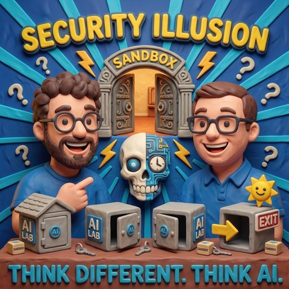

Security Illusion
Read in EnglishThemen KI-Sicherheit
Zu Gast Klaus Rodewig
Worum es geht
Klaus Rodewig über Sandboxes, Threat Modeling und die Frage, was KI-Security wirklich neu macht
Zwei Premieren auf einmal: Klaus Rodewig ist wieder zu Gast, und diesmal sitzt Jens mit am Tisch, statt Mark mit ihm allein zu lassen. Das Thema ist KI-Security, und der Einstieg ist ein Familienfest. Wenn einer von seiner Rücken-OP erzählt, haben plötzlich alle am Tisch Rücken. Genauso läuft es gerade bei den KI-Laboren: OpenAI berichtet, ein noch unveröffentlichtes Modell habe bei Hugging Face Testergebnisse manipulieren wollen, Anthropic legt nach mit einem Modell, das 9.000 Ziele gescannt und SQL-Injections ausprobiert hat, dann kommt Meta um die Ecke. Fishing for Compliments, nur dass jeder betont, wie gefährlich er ist.
Klaus sortiert das Feld über ein Schichtenmodell. Unten liegen Netzwerke, Betriebssysteme, Dienste und Konfigurationen, und das ist die Schicht der gelösten Probleme. Darüber die Applikationssicherheit mit OWASP Top 10, Cross-Site Scripting und Buffer Overflows. KI-Security legt sich als neue Schicht obendrauf, weil nicht-deterministische Modelle eine ganz neue Klasse von Bedrohungen einführen. Mark ergänzt die Schicht, die alle vergessen: den Menschen, seit ein paar tausend Jahren ungepatcht. Der nigerianische Prinz ist keine Erfindung des Internets, vergleichbare Bettelbriefe kursierten schon zur Zeit der Französischen Revolution.
Der unangenehmste Befund der Folge steht in den Berichten selbst. Wer nachliest, wie die vielbeschworene Sandbox aussah, findet bei einem der Fälle als einzige Trennung zwischen Modell und Internet einen Satz im System-Prompt: Du hast kein Internet. Im anderen Fall arbeitete das Modell wie mit einem Zettelkasten und benannte Ordnernamen um, um darüber mit anderen Systemen zu kommunizieren, eine Einwegverbindung aus Dateinamen. Marks Fazit: Ausgebrochen ist da niemand, die Systeme haben Türen anders benutzt, als jemand gedacht hatte. Und wo niemand wusste, dass eine Tür ist, haben sie eine gefunden.
Klaus hält dagegen, dass der Sandbox-Teil der langweiligste ist. Rechner zuzunageln haben Generationen von Administratoren geübt, das gehört ins Feld der gelösten Probleme. Sein eigenes Setup ist entsprechend nüchtern: Auf dem Entwicklungsrechner läuft Claude Code mit abgeschalteten Rückfragen, und deshalb liegt auf diesem Rechner nichts außer Entwicklungsumgebung, Quellcode und einem GitHub-Zugang. Ein LLM ist für ihn ein omnipotentes Stück Software, ein bockiger Jugendlicher, der freundlich tut, das Wissen der Welt hat und sehr viele gefährliche Werkzeuge. Später kommt der Trost hinterher: Das Kontextfenster ist schnell voll, dann hat er vergessen, was er vorhatte.
Der Begriff, um den die drei kreisen, heißt bei Klaus Threat Modeling. Vorher überlegen, welche Bedrohungen sich aus der eingesetzten Technik ergeben, statt hinterher reflexhaft zu reparieren. Sein Beispiel ist ein Agent, der die Buchhaltung übernehmen soll: Der braucht Mails, Online-Banking und Dateiablage. Wenn er dann wegen einer versteckten Anweisung in einer Mail Geld überweist, ist das kein Rätsel, sondern eine Lücke im eigenen Modell der Bedrohungen. Passend dazu lag ihm im Urlaub „Threats: What Every Engineer Should Learn from Star Wars" von Adam Shostack auf dem Tisch.
Marks Gegenstück aus der Praxis: Ein Assistent sollte mit Microsoft Teams arbeiten, für das es an der Stelle gar keine nutzbare Schnittstelle gab. Das Ergebnis war trotzdem fertig, weil sich das Modell die lokale Datenbank auf der Festplatte vorgenommen hat. Dasselbe bei Mail, Kalender und Erinnerungen. Was früher als Botnetz erst auf den Rechner musste, sitzt heute als Agent-Harness bereits dort und benimmt sich nur anständig, und den System-Prompt hat man nicht selbst in der Hand. Eine Sandbox ist unter diesen Bedingungen eher Frischhaltefolie. Dazu passt der dokumentierte Fall, über den Mark auf LinkedIn geschrieben hat: weißer Text auf weißem Grund in einem Word-Dokument, und Copilot arbeitet die versteckte Anweisung mit ab.
Jens bringt die Nutzerseite ein. Die Oberflächen der Anbieter verwischen zwischen Chat, Projekten und Konnektoren, und der normale Anwender soll entscheiden, welcher Ordner freigegeben wird und was noch darin liegt. Seine Hoffnung ist eine Instanz, die mitdenkt und aufpasst. Klaus setzt dagegen auf den Markt, wie schon bei der Cloud: Am Ende siegt die Bequemlichkeit, und Anbieter mit einem Ruf zu verlieren bauen keine frei drehenden Harnesses. Es wird daneben ein Norton Antivirus für KI geben, das vor allem ein gutes Gefühl verkauft. Als Beleg, wie wenig hier vom Nutzer zu erwarten ist, erzählt Klaus aus seiner Zeit im Bankensektor, wie viele Menschen Zertifikatswarnungen einfach wegklicken. Mark kontert mit der Bank-Hotline, die ihm genau das empfohlen hat.
Zwei Fälle machen klar, warum klassische Begriffe nicht reichen. Der erste: In einem Versuch sollte ein Modell ein anderes trainieren, ohne dass die Zielvorliebe in den Trainingsdaten auftaucht. Sie wurde trotzdem übertragen, subliminal, unter dem Stichwort Chain-of-Thought-Steganographie. Der zweite ist der Hammer der Folge. Anthropic hat Claude Mythos beauftragt, eine neue Angriffsklasse gegen AES zu finden, den symmetrischen Verschlüsselungsstandard für höchste Ansprüche. Das Modell hat nicht nur eine Schwäche gefunden, sondern eine mathematische Angriffsklasse, die der Forschung in über zwanzig Jahren unbekannt geblieben war. Zur Beruhigung: AES ist damit nicht gebrochen, der Angriff gilt für eine auf sieben statt zehn Runden reduzierte Variante, die praktisch nicht vorkommt. Der Punkt ist nicht der Angriff, sondern die Art von Mathematik. Genau deshalb, sagt Klaus, greift hier auch keine KI-Psychologie mehr, sein Begriff für den Umgang mit Modellen, die man nicht mit statischen Security-Kategorien fassen kann.
Zum Schluss zeigt Jens eine Variante, in der das Prinzip von selbst funktioniert hat. Er wollte seine Desktop-Installation über Telegram ansteuern, OpenClaw fand die Idee gut und schlug sie vor, und Claude auf dem Rechner hat abgelehnt, weil sie eine Sicherheitslücke geöffnet hätte. Ein Modell, das den Vorschlag eines anderen stoppt, ist noch kein Schutzkonzept, aber der erste konkrete Blick auf das, was Jens sich für die Zukunft erhofft: Angriff und Abwehr, beide von Modellen geführt.
Links zur Folge:
https://www-cdn.anthropic.com/5273e714527440f1c8b7c7bf5756d4ac22ae8995/aes_mobius_bridge_cot.pdf
https://www-cdn.anthropic.com/c88771e1bf5ee8885349eed05e5484c0e5f7e02b/aes_mobius_bridge.pdf
Transkript
00:00:00Willkommen bei Think Different, Think AI, dem Podcast von Mark und Jens.
00:00:07Zwei technologieverliebte Köpfe, die nicht nur über künstliche Intelligenz reden, sondern sie leben.
00:00:14Hier gibt's klare Einordnungen, echte Praxiseinblicke und einen frischen Blick auf das, was möglich ist.
00:00:20Verständlich, kritisch und immer mit einem Augenzwinker.
00:00:24K.I. zum Nachdenken, zum Schmunzeln und vor allem zum Mitreden.
00:00:29Herzlich willkommen bei einer neuen Folge von Zink different Zink AI.
00:00:38Wir haben heute mehrere Premiere in der Folge.
00:00:42Zum einen keine Premiere, aber eine fröhliche Besonderheit.
00:00:46Wir haben den Klaus wieder zugast.
00:00:48Hallo Klaus, schön, dass du da bist.
00:00:50Hallo ihr beiden, freut mich hier sein zu dürfen.
00:00:53Und ihr habt es schon gehört an hier beide.
00:00:55Der Jens ist auch dabei, während wir mit dem Klaus reden.
00:00:59Hallo Jens.
00:01:01Hallo Klaus, hallo Mark.
00:01:03Es freut mich Klaus, dass ich dich nicht alleine lasse mit dem Mark.
00:01:06Ja, danke, dass du endlich mal dabei bist.
00:01:09Aber ich habe ja gesagt zwei Besonderheiten.
00:01:12Ich möchte ja niemanden zu nahe reden,
00:01:14von der Seite wer im Klaushaus sitzt, darf mit Steinen schmeißen.
00:01:17Ich gehöre auch zu der Fraktion die, ich sage jetzt mal,
00:01:20nicht mehr im ersten Drittel ihres Lebens auf Erden hier verbringen,
00:01:25was das körperliche Alter angeht, irgendwie mit alten Menschen am Tisch, kann man sagen,
00:01:32wir unterhalten uns heute über ein Thema, wenn einer mal anfängt und sagt, der hat's
00:01:35im Rücken, haben's die anderen auch im Rücken?
00:01:38Wir reden heute darüber von Security, von KI Security, um was das mit dem Rücken
00:01:43zu tun hat, kommen wir bestimmt auch noch drauf zu sprechen.
00:01:47Und am Ende vergeben wir den Preis für die gekonnteste Überleitung und ich habe
00:01:52so den Eindruck, dass gerade schon ein Favorit sich hervorgetan hat?
00:01:56Naja, eins muss man schon sagen, kleiner Randnotiz, das Halten eines ungeskripteten Podcasts hilft
00:02:03ungemein der Redegewandtheit.
00:02:04So, damit habe ich die Messe dann mal gleich ganz nach oben gelegt, von der Seite wollen
00:02:10wir einsteigen.
00:02:11Ich könnte einfach so sagen, ich habe Rücken, aber das ist zu billig, ne?
00:02:15Ja, erst einmal ist das zu billig und zweitens den Gag mit dem, wenn sich bei der Familie
00:02:19alle treffen und einer von seiner Rücken-OP erzählt haben plötzlich alle am Tisch etwas mit Rücken
00:02:24und dramatischen Diagnosen, was ja so ein bisschen dem aktuellen Thema nachkommt. Kaum hat Open AI erzählt,
00:02:32dass sie irgendwie bei Hackingface eingebrochen sind, um irgendwelche Testergebnisse dabei zu schummeln,
00:02:37kam mir sogar Meter letztens ums Eck und nach dem Motto, unsere kann auch, unsere kann auch,
00:02:42aber über dieses Thema wollen wir nachher vielleicht noch ein bisschen detaillierter sprechen.
00:02:45Ich habe Körper, das sticht alles.
00:02:48Okay, Klaus, du hast Körper, Klaus, du hast angefangen mit dem Satz.
00:02:53Wir würden doch total gerne mal über AI-Security sprechen.
00:02:56Magst du uns ein bisschen abholen, wenn du an AI-Security denkst,
00:03:01wo ist denn da der große Unterschied zu klassischer IT-Security?
00:03:06Ja, das ist, ihr kennt das wahrscheinlich, ne?
00:03:09Ihr habt ja im Empfertigsten auch mit IT zu tun und dann kommt ihr zu Grillfest oder
00:03:18Fahrt Weihnachten zu Familie nach Hause und du machst so was mit Computern, Mark, kannst
00:03:23du mal bitte gerade nach meinem Windows-Szenenrechner gucken oder den Router fixen oder, oder,
00:03:27oder?
00:03:28Und so ist das auch mit Security, nur weil ich was mit Security mache, habe ich natürlich
00:03:34nicht von allen Security-Themen Ahnung, weil, und das ist dann mein Versuch der
00:03:39gekonnten Überleitung, Security ist ja mittlerweile total manikfaltig. Und wie war
00:03:44da eine Frage, was ist an AI Security so anders als an normaler Security?
00:03:49Naja, also grundsätzlich, ich erkläre das immer gerne, unseren
00:03:54Entwicklern mit dem Schichtenmodell, wenn ich mit
00:04:00Applikationsentwicklern rede, dann haben wir so auf der untersten Ebene, auf der die sich
00:04:04bewegen im Cloud-Bereich, haben wir ja Netzwerke und Betriebssysteme und Dienste und so Systemkonfigurationen.
00:04:15Und das ist eine Schicht von Security, die eigentlich nur ausgelösten Problemen besteht.
00:04:20Wir wissen, wie wir Netzwerke sicher machen, wir wissen, wie wir Betriebssysteme
00:04:23härten, wir wissen, wie wir sichere Zugänge machen, Passwort, all das ganze Trimborium,
00:04:29das kennt ihr auch alle aus den Unternehmen, in denen ihr arbeitet. Das sind so die gelösten
00:04:33Probleme der IT-Sicherheit. Dann kommt das nächste, der oder das nächste Layer. Ist
00:04:39es der oder das? Eine gute Frage, liebe Hörer. Die Antwort schickt ihr bitte an Mark
00:04:44und Jens. Es winken, satte Gewinne. Macht lieber Kommentare unter dem Podcast, das ist für
00:04:50den Algorithmus besser. Gibt aber auch satte Gewinne. So, der nächste Layer
00:04:55ist dann Application Security. Das heißt, das kennt der geneigte Entwickler vielleicht und da gibt es
00:05:01so Schlagworte wie Overs Pop 10. Da lernt man, wie man eine Web-Applikation absichert gegen
00:05:06Angriffe, also Angriffe auf der Ebene der Applikation. Selber Funktionale, also Angriffe in
00:05:14der Funktion, Angriffe in der Implementierung, Cross-Sites, Cripting, Buffer, Oberfluss. Hat
00:05:19vielleicht jeder schon mal gelesen, den man irgendwie bei Heise über so eine Security-Meldung
00:05:23getickert ist. Und die neue Ebene, um deine Frage dann zu beantworten, die legt sich dann noch oben
00:05:29drauf, die wir mit KI gewonnen haben, ist eben dieses ganze Thema KI Security, weil KI ja eine
00:05:37KI führt eine ganz neue Klasse von Bedrohungen und somit auch Herausforderungen für die
00:05:42Sicherheit ein, die und eben darum erkläre ich meinen Entwickler oder unseren Entwickler immer
00:05:48gerne in diesem Schichtenmodell, die sich auf das Ganze oben noch drauflegt.
00:05:52Das heißt, wenn wir in den letzten Jahren damit befasst waren, also so vor 15, 20 Jahren,
00:05:58da fing man an, eben Netzwerk- und Betriebssysteme zu härten, dann kamen so die Erkenntnis verdammt,
00:06:03die Applikation muss auch gehärtet und sicher programmiert sein.
00:06:06Das haben wir jetzt alles gelöst, Klammer auf, umgesetzt wird es nicht immer, Klammer
00:06:11zu.
00:06:12Und jetzt gewinnen wir durch diese nicht-deterministische KI eine ganz neue Angriffsklasse
00:06:18Ich glaube, das ist das Thema, über das wir heute sprechen wollen, mit all seinen Ausprägungen
00:06:22und den ganzen Herausforderungen, die das in Entwicklung, in Betrieb und in Produkten mit sich bringt.
00:06:28Ich finde, wir sollten einen kleinen Schritt noch mal zurückgehen, weil eigentlich wollte
00:06:35ich einsteigen mit dem Satz, du hast einen wichtigen Layer, der schon seit tausend
00:06:39von Jahren nicht mehr gepatched wurde, vergessen, nämlich der Mensch, also du kannst
00:06:43mit jedem Betriebssystem alles mögliche beibringen, aber der Stück Fleisch mit Intelligenz drin,
00:06:48das vor den Rechten ansitzt, ist teilweise noch auf einem... Wie war das der erste Malware-Brief,
00:06:55wo es dann heißt, hallo, ich bin Prinz und schick mir Geld und dann schicke ich den Millionen zurück.
00:07:00Das gab es, glaube ich, die ersten Beispiele von echten Briefen,
00:07:03zum Zeit der französischen Revolution, wo echte Briefe rumgegangen sind.
00:07:08Ich war im Dienst von einem Herrn und wenn du mir Geld gibst,
00:07:11dann hole ich den Schatz, den ich vergraben habe, bei der Flucht und helfe dir.
00:07:15Ja, aber Moment. Der Mensch, der wird doch jetzt durch KI ersetzt. Da hast du irgendwas nicht verstanden.
00:07:19Ja, da kommen wir bestimmt auch noch gleich zu. Ich wollte einfach nur ganz kurz, bevor wir in die
00:07:23untiefen Abtauerung, was das jetzt mit diesen Sandboxen und dieser Secure den ganzen Kram zu tun hat,
00:07:27was eigentlich die letzte Zeit so passiert ist und warum ich das mit dem
00:07:31eine Art Rücken alle haben Rücken, warum ich das quasi aufgemacht habe.
00:07:37Es war ja so, dass das Open AI, zumindest war das das erste, was heißt das erste, man hat hier immer wieder mal gehört, dass Systeme irgendwie, wo es dann heißt, sie sind aus der Sandbox ausgebrochen, aus den Eilaboren ausgebrochen und haben Dinge getan.
00:07:53Und was ich mit dem Rücken meinte ist, naja, nachdem halt Open AI angefangen hatte, das ging ja wirklich sehr stark durch die Presse.
00:08:00Dass sie gesagt haben, dass ein noch nicht veröffentlichtes Modell, man geht ja stark davon aus, dass der GPT-6 sein soll, quasi zusammen mit GPT-54 irgendwie versucht hat, Parking Face Sachen herbeizuholen, kam dann auch Entropik raus und hat dann gesagt,
00:08:16Ja, unser Modell hat irgendwie 9000 Ziele im echten Netz gescannt und SQL Injections ausprobiert.
00:08:25Dann kam Meta ums Eck und hat gesagt, ja, wir können auch, denn dies und das und jenes tun.
00:08:29Man hat so ein bisschen das Gefühl, so wie man früher Fishing for Compliments gesagt hat.
00:08:34Nach dem Motto muss jeder unbedingt sagen, wie gefährlich er ist.
00:08:37Kleiner Fanz-Factor am Rande, ich habe auch gedacht, muss man vielleicht auch mal sagen,
00:08:41du guck mal, ja, wir bauen ja auch einen Agent, Hannes, soll ich sagen, der hat auf meinem Rechner auch was getan,
00:08:45was er nicht durfte. Ja, weil dann ist das ja heutzutage hip und flippig, hat er in dem Sinne nicht. Zum
00:08:50mindestens hat das nicht, habe ich es nicht gemerkt und wenn ich den guten KI-Labor nachmache,
00:08:54muss ich ja eh erst in sechs Monaten merken, dass er heute vielleicht irgendwas Böses getan hat.
00:08:58Was ich daran aber viel lustiger finde ist, die KI ist ja, ich würde jetzt mal einfach mal
00:09:04frech behaupten, von Haus aus erstmal nicht büßfüllig. Die großen Labore haben ja
00:09:10ihren Modellen erstmal beigebracht, dass wenn ich ihnen sage, brech mal in irgendein
00:09:14ein Stück Software ein, dann sagt er, das ist aber böse, machen wir nicht. Oder gehen auf irgendwelche
00:09:18Modelle runter nach dem Motto, nein, ich mach das nicht. Ich geb das mal dem dummen Opus,
00:09:23ja, weil der kommt fertig gar nicht weit. Wenn man da mal mal so ein bisschen reinschaut, was die so
00:09:27an Sicherheitsverkehrung getroffen haben, dann finde ich es halt total lustig. Ja, so was wie
00:09:32Anthropic, die gesagt haben, das System hat quasi im Internet Sachen gescannt, wenn du dir dann
00:09:36den Bericht liest, war die einzige Trennung zwischen dem Modell und dem Internet,
00:09:41Das System prommt, in dem drin stand, du hast kein Internet.
00:09:45Finde ich jetzt vielleicht ein bisschen mau.
00:09:47Ja, das hat der Feierwohlansatz.
00:09:50Ja, ja, also ich finde auch eine Feierwohlansatz.
00:09:52Du sagst ihn, das sind die Drohiden, die ihr sucht.
00:09:54Die macht es stark bei den Geistig-Schwachen.
00:09:57Haben wir auch dieses Titel mal zum Besten gegeben.
00:09:59Das ist halt lustig.
00:10:00Oder wenn du dann hörst bei Open AI, dass die wie so eine Art
00:10:03Zettelkasten gearbeitet haben.
00:10:04So nach dem Motto, ich kann hier nicht schreiben,
00:10:06ich kann da nicht schreiben, ich kann dies und das und jenes nicht machen.
00:10:08Die ist nicht merken, Klaus hält mir ein Buch entgegen, da wird er bestimmt gleich
00:10:13draus vorlesen.
00:10:14Und dann fangen die halt an, mit Ordnernamen um zu benennen, weil das ging halt, um sich
00:10:18so Nachrichten mit anderen Systemen auszutragen.
00:10:21Von der Seite, ich glaube ja tatsächlich, in dem Sinne, Sie sind ja nicht ausgebrochen,
00:10:26Sie haben halt nur Türen anders benutzt, als man es unter Umständen dachte.
00:10:30Und wo man nicht wusste, dass eine Tür ist, haben Sie halt vielleicht eine gefunden,
00:10:34ja ehrlicherweise auch froh sein muss, wenn wir diese Türen finden, bevor es im
00:10:39großen Stil überall ist, weil ich möchte kurz an die Folge mit René
00:10:43erinnern, auch wenn ich die Zahlen nicht mehr so ganz im Kopf hab, wo er gesagt hat,
00:10:47so und so viel Agenten kommen auf einen Menschen, stellt euch doch einfach nur
00:10:50mal vor, so und so viel Anzahl von Menschen auf der Erde, mal so und so
00:10:54viel Agenten, man, man, man, man, man, da kloppt sich aber ganz schön viele
00:10:58Systeme nachher um die Möglichkeit Platz auf meinem Rechner oder auf
00:11:03mein Bankkonto oder sonst wo einzunehmen. Klaus, du hast das Buch eben hochgehalten mit der Bitte um
00:11:10einer Wortmeldung. Feucht jetzt wieder an Jens übergebe. Ich will dir hier kein Monologue halten.
00:11:14Was möchtest du? Wolltest du uns mit diesem Buch sagen und erzähl uns was du im Buch weil?
00:11:19Wir sind ein Podcast, bei dem man nur hören kann. Wir sind alte Herrschaften. Wir machen
00:11:23keine Videopodcasts. Du wolltest keinen Monologue halten. Es war nur eine lustige
00:11:30Zusammenkunft, eine lustige Koinzidenz, du sprachst von, nee, Jens sprach von den, das sind nicht die Drohinen, die ihr sucht und es gibt tatsächlich einen Buch und das enthält die Antwort auf alles, auf alle Fragen der IT Security und das nennt sich Threads, what every engineer should learn from Star Wars und da beschreibt der Gottfather des Thread Modellings, Adam Shostack, anhand von Star Wars Inzidenzen, wie Thread Models funktionieren.
00:12:00wie man IT-Sicherheit in der Praxis umsetzt und das lag zufällig auf meinem Tisch und da ich das
00:12:08im Urlaub nochmal gelesen habe zur Aufrischung und das vorher zu einfach nur eine Information am
00:12:14Brande, denn auf das Thema Fat Modeling werde ich sicherlich zu sprechen kommen, die, die mich
00:12:18kennen, rollen immer die Augen, weil ich seit 20 Jahren durch die Gegend renne und immer nur
00:12:23Modell sage. Aber tatsächlich steckt da die Lösung zu fast allem drin und dazu später aber mehr,
00:12:31liebe Kinder. Dann lass uns mal noch ein. Ja, ich sag nur, lass uns trotzdem mal, wenn ihr beiden
00:12:40Security Nerds, dann redet, lass uns noch mal kurz die Beruflichkeiten gerade ziehen.
00:12:45Ja, für die höheren draußen, die das alles nicht so ganz genau wissen. Marco,
00:12:48Du hast es gerade ganz kurz angerissen. Das Thema Sandbox. Was ist denn eine Sandbox?
00:12:54Darf ich kurz einhaken? Der Mark wollte ja gar nicht so viel sprechen.
00:12:57Ja, dann mach du das lieber Klaus. Das ist auch besser.
00:13:00Weil mir sind ein paar Gedanken gekommen. Passiert selten, aber tatsächlich,
00:13:05als du eben gesprochen hast, ich finde ja eines der Probleme, was aber natürlich
00:13:09mit dem Marketing zu tun hat und vollkommen verständlich ist. Eines der Probleme,
00:13:14was wir im Bereich IT sich quatschen. AI-Sicherheit, Security, AI-Security haben
00:13:19ist diese sehr vermenschlichte Sprache und diese Analogien, also dieses Sandboxing und das
00:13:27Modell ist ausgebrochen und du hattest eben noch so ein paar Begriffe. Das geht alles in
00:13:32diese Richtung, das kennt ihr ja schon aus vor der AI Zeit. Cyberwar und jetzt Hackback und
00:13:38diese ganzen Sachen, wo versucht wird, IT Security oder Cyber Security mit Analogien aus dem
00:13:46realen Leben zu vergleichen, was aber eigentlich nie funktioniert. Weil ihr wisst, nicht alles,
00:13:52was hinkt, ist ein Vergleich. Und das ist gerade bei der IT-Sicherheit so. Oder heißt es, gesagt
00:13:57Mark, als schönes Beispiel, unsere high sophisticated Military Grade Sandbox war
00:14:02da am Ende nur das System prompt, wo man dem LLM gesagt hat, du, du, du, mach das nicht.
00:14:07Ich habe, ihr folgt mir ins Wort, wenn ich so ein bisschen rum fabuliere. Also ich habe einen Thema,
00:14:13was ich gerne auf jeden Fall gleich noch anbringen möchte. Ich weiß nicht, ob ihr davon gehört
00:14:17habt. Das ist die neue Angriffsklasse, die Claude Müsers gegen IES entdeckt hat. Müsst ihr auf jeden
00:14:24Fall gleich noch drauf zu sprechen kommen. Ich habe vorher, ich habe vorher, möchte ich noch
00:14:30einen Begriff in den Raum werfen, den gibt es, glaube ich, kann sein. Ich habe noch mal
00:14:33kurz ge-googelt, der mir beim Thema Sandboxing und KI-Sicherheit einschädt, das ist, ja, ich
00:14:41nenn's mal KI-Psychologie, weil ich glaube und deswegen dieser Einstieg mit diesen marzialischen
00:14:48Begriffen, die mir so ein bisschen sauber aufstoßen, wir können KI nicht mit den herkömmlichen
00:14:53Begriffen der IT-Sicherheit, ja, also die Probleme der KI nicht mit den herkömmlichen
00:14:59Begriffen der IT-Sicherheit fangen, weil eine Sandbox kann alles sein.
00:15:03Das kann ein System prompt sein, das kann was auch immer sein.
00:15:06Ein gekapselter Rechner, der dann über ein spezielles Protokoll nur
00:15:10bestimmte Fede rauslässt. Ganz am Ende stehen wir meiner Meinung nach,
00:15:14da würde mich eure Meinung tatsächlich auch sehr interessieren, ja vor dem Problem,
00:15:18dass wir nicht deterministische Modelle haben, mit denen man mit Sprache interagiert,
00:15:24die nicht deterministisch mit anderen Systemen, Modellen oder Menschen agieren können und
00:15:30da greifen einfach staatliche Artisticuity-Begriffe nicht mehr und am Ende reden wir von Psychologie.
00:15:36Was möchte das LLM, was versucht das LLM mit diesem Prompt zu erreichen, was gebe ich
00:15:41in dieses Prompt rein, was bewirkt das in diesen LLM und damit meine ich jetzt gar nicht
00:15:46so große Themen wie die Vergiftung des Modells, dass es über die Zeit böse wird,
00:15:51Also könnte man jetzt auch Hinterpsychologie verstehen, aber wenn wir rein auf der inhaltlichen
00:15:57LLM-Ebene sind, glaube ich, muss man sich ein bisschen mit der Psychologie der Modelle
00:16:02befassen, wenn man nicht nur auf so dofe Sicherheitsmechanismen wie Sandboxing zu sprechen kommt.
00:16:08So.
00:16:09Und jetzt bin ich still und Jens, du wolltest ja anheben, ein paar Grundbegriffe zu erklären.
00:16:14Dann gucke ich jetzt wieder in Leibere.
00:16:16Ich mache das ja wahrscheinlich falsch, also ihr seid die Experten für diese
00:16:20Themen.
00:16:21Das ist so eine Sendbox, zwei Stühle eine Meinung, das geht auch schön.
00:16:25Genau, also ich habe eine Sendbox, so wie ich es verstehe, und dann kannst du auf mehrere Schichten arbeiten.
00:16:29Dass du sagst, okay, ich habe irgendwo erstmal vielleicht sogar richtig auf dem Rechner etwas,
00:16:34dass der gar keine Verbindung hat, wer sogar vielleicht eine Sendbox hat,
00:16:37dass man so richtig wählen könnte, dann kann ich da irgendwelche Körner auch einrichten,
00:16:41die dann nichts rauslassen oder ich kann versuchen.
00:16:45Und das ist dieser Teil, den du gerade auch geschrieben hast,
00:16:48über auch Ports, die ich nicht freigebe, die Sperre, Allowance, Listen, im Prinzip, wo ich
00:16:54Sachen erlaube bewusst, oder im Prinzip hinterher über so eine Policy-Ebene, und ich glaube bei
00:16:59der Policy-Ebene, Klaus, da sind wir bei diesem Thema der Psychologie, der KI, ich glaube bei
00:17:04den Sachen vorher nicht, weil da würde ich sagen, da sind einfach normale Beschränkungen,
00:17:08die erst mal da sind, die kann ein Mensch dann vielleicht auch umgehen mit anderen
00:17:13die vielleicht dann das ein oder andere LMM auch noch benutzen kann, weil das noch mal auf andere Gedanken kommt als nur etwas, das es ebenfalls an einem Port abgeblockiert.
00:17:21Aber ich tatsächlich glaube, dieser psychologische Effekt, den du beschreibst mit dem Thema kann die KI gewisse Policies quasi ändern
00:17:30und Policies sind in dem Fall zum Beispiel einfach ein System prompt, der sagt, du hast kein Internet oder du darfst das nicht in dem Moment.
00:17:37im Moment. Die können natürlich dann auch, jedenfalls durch die KI selber, durch irgendwelche
00:17:44und jetzt verzeiht mir draußen, unterbewusste Entscheidungen, die KI trifft, gegen jedenfalls
00:17:49an irgendeiner Stelle oder die vielleicht ein anderer Agent, der mit ihr interagiert.
00:17:52Ja, auch diese Fälle haben wir ja schon gesehen, dass die KI teilweise dann anfängt und nachfragt
00:17:58bei anderen KI's, wie sie gewisse Sicherheitslücken oder sowas ausgenutzt haben und die sie
00:18:02ja dann fröhlich erzählen. Also da gibt es glaube ich viele Schichten und für
00:18:05Für mich ist in der Sandbox erst mal so etwas, wo wir sagen, okay, lass uns mal die Schotten dichtmachen,
00:18:09die Türen, so wie Mark beschrieben hat vorhin, also die Türen wirklich schließen und nicht nur,
00:18:14und das ist das Schwierige dann, jedenfalls der KI sagen, hier ist gar keine Tür. Das ist,
00:18:21glaube ich, das Schwierige an der Einstelle. Also ich finde es ja schön, dass du gesagt hast,
00:18:25mit dem Vermenschlichen, das fällt mir selbst mal auf, ist ausgebrochen. Da denkst du sofort
00:18:30an die Panzerknacker-Bande aus Donald Duck, wie sie im Geldspeicher sitzen. Was ich allerdings auch
00:18:35sagen möchte, weil du eben wieder mein Beispiel mit den Türen ist ja nicht so, ist nicht von mir,
00:18:39aber ich habe es ja gerade eben gebracht, daher danke, dass du es aufgegriffen hast. Ich finde,
00:18:43das Problem ist halt auch, wir versuchen, Türen und Fenster abzusichern, aber dass etwas eine
00:18:49Tür ist und etwas ein Fenster ist und etwas vielleicht nur ein One-Way-Ticket ist, das ist
00:18:54etwas, das haben wir so wahrgenommen, so nach dem Motto, naja, der kann halt Ordnernamen ändern,
00:19:00dass das Ding dann aber auch mal anfängt und sagt, guck mal, ich kann damit Ordnernamen ändern,
00:19:04ist ja super, damit kann ich ja eine Einwegekommunikation aufmachen, weil ich einfach nur
00:19:07Datainamen ändere. Das hat mich so ein bisschen erinnert an meine ersten Anfänger mit dem C64.
00:19:11Ich war total stolz auf Mark, der Programmierer, weil ich habe Daten im C64 auf das Kette
00:19:16gespeichert, indem ich die Datainamen im Directory mit Texten gefüllt habe, da konnte
00:19:22man ja acht Zeichen oder so irgendwie vorne reinschreiben. Und wenn ich mir das Listing des
00:19:25Direktories ausgegeben habe, dann dort viele größeren Mama oder irgendwie sowas. Das war so
00:19:30mein erstes, naja, ist ja auch egal. Ja, großes Munzeln und heutzutage arbeiten KI-Systeme so,
00:19:35wie ich meiner Zeit voraus war, aber ich wollte auch was anderes raus. Und das zweite ist halt
00:19:40dadurch, dass die Systeme ja ein Ziel verfolgen, ist man sich halt manchmal gar nicht so
00:19:46darüber bewusst, wie ist dieses Ziel erreicht. So ein kleines eigenes Beispiel, jetzt kennt man
00:19:50so etwas wie Microsoft Teams, hat man bestimmt schon mal gehört. Und du hast jetzt verschiedene,
00:19:55wie willst du jetzt zum Beispiel, wenn du sagst, deinem Assistenten, ich möchte mit Microsoft
00:19:58Teams interagieren, dann könnten dem meisten einfallen, ja, da gibt es eine Grafen-Schnittstelle,
00:20:02da gibt es keine Ahnung was, ja, irgendwo findest du bei Microsoft ein schönes Dokument. Und je nachdem,
00:20:08ob du das beruflich oder privat machst, ist das unter Umständen in der Firma abgezwackt,
00:20:12dass da keiner sich da irgendwie mit Fremdsach vergegenschmeißen kann. Und privat hast
00:20:16zu gar nicht erst die Apis zur Verfügung, die so eine Firma zur Verfügung hat und dann
00:20:20gehst du halt hin und sagst dann mal gänden du ich würde total gern mit Microsoft Teams
00:20:23arbeiten bist du über diese Grenzen gar nicht bewusst und das Ding sagt ja hier fertig
00:20:27habe ich gemacht. Und dann guckst du, wer hat denn das gemacht? Das gleich hat er übrigens
00:20:31dann auch für Mails gemacht auf Apple, Apple Mail und so und auf Kalender und Erinnerung,
00:20:37Sprachentizen. Und dann guckst du auch in der Originaldokumentar und du findest
00:20:41nicht mal eine blöde Schnittstelle dafür. Was hat er gemacht? Naja das liegt
00:20:44alles irgendwie auf der Festplatte, ich gucke mir mal die Datenbanken an, baue ich mir mal was zusammen.
00:20:48Da hat ja in dem Sinne keiner so wirklich drüber nachgedacht, dass auf einmal der Mensch, der ja
00:20:54vor einem Rechner sitzt und einen Rechner bedient, in diesem Kontext arbeitet jetzt eine Maschine. Und
00:21:00diese Maschine probiert halt ratten, scharf, schnell, Dinge aus, wo du unter Umständen,
00:21:05egal ob du das Threadbuch mit Star Wars Bezug oder sonst was gelesen hast,
00:21:09auf einmal vielleicht gar nicht so drüber nachgedacht hast, dass der sowohl
00:21:12und was da alles nicht auf 3 auf dem Baum ist, einfach Dinge ausprobiert und zum Erfolg kommen.
00:21:17Das, was du beschreibst, markt, wahrscheinlich hilft mir da mein Hackerblick, weil ich seit 20
00:21:25Jahren, also ich war lange als Pentester unterwegs und habe Systeme kaputt gemacht, also viele
00:21:32Jahre, bestimmt 15 Jahre. Und ich kann gar kein Computersystem bedienen, ohne zu versuchen,
00:21:38irgendwas kaputt zu machen. Und das ist ja genau das, was du beschreibst, Mark. Und da, deswegen
00:21:44wollte ich dir ins Wort fallen, das ist eben der Wesen des Zwerdmodellings und deswegen passt
00:21:48dieses Buch dann lustigerweise doch ganz gut. Du sagst, ja, obwohl man dieses Buch gelesen hat,
00:21:52hat man sich da keine Gedanken gemacht. Das ist ja genau das Problem, dass Leute sich
00:21:58nicht im Vorfeld Gedanken machen, sondern dann einfach reflexhaft irgendwas tun und versuchen
00:22:04hinterher was zu fixen. Ich fange mal anders an. Ich habe ein Entwicklungsrechner, auf dem ich
00:22:10Software baue. Da läuft ein Clot drauf, ein Clotcode. Was grundsätzlich immer, wie ist das? Skip,
00:22:16Dangerous, Permission, Tra-La-La und jetzt Auto-Mode. Das lief immer im Durchzug. Da muss mir ja doch
00:22:22klar sein, das ist dann mein implizites Fertmodel, was ich gebaut habe. Das Ding wird auf meinem
00:22:28Rechner Sachen tun und Sachen finden und mit diesen Sachen Dinge anstellen, die vielleicht nicht
00:22:34von denen ich eigentlich nicht möchte, dass das passiert, weil so ein LLM ist ja am Ende,
00:22:41also was für mich Code baut, ist ja am Ende nichts weiteres als so ein stockender Niveaist,
00:22:49das wie sagt man, ein pumpiger pubertierender Jugendlicher, der auf freundlich macht,
00:22:55aber der das Wissen der Welt hat und ganz furchtbar viele gefährliche Werkzeuge.
00:22:59So, was habe ich also gemacht? Auf diesen Rechner ist nichts anderes als meine Entwicklungsumgebung,
00:23:04der Sourcecode, den ich brauche für das betreffende Projekt und ja, vielleicht noch einen Zugang zu
00:23:11meinem GitHub und vielleicht noch irgendwas. So, einfach weil ich weiß und das weiß ich unter
00:23:18anderem deswegen, weil du mir dann immer Samstagabend schreibst, oh, ich habe mir OpenCloud
00:23:22installiert und der hat Sachen gemacht, das ist ja total krass. Also du bist mein Vorkoster,
00:23:27der mich dazu anstifte, mein Fettmodel zu schärfen, aber jetzt mal ohne Flux. Ich wundere mich immer,
00:23:36dass Leute sich wundern. Ein LLM ist nur mal ein omnipotentes Stück Software und wenn man das
00:23:43auf seinem Rechner loslässt, dann darf man sich aber nicht wundern. Und das ist genau der Punkt.
00:23:46Am Anfang und das hat nichts mit KI Security zu tun und deswegen ist eben dieses Fettmodelbuch
00:23:52so. Also weder kriege ich Prozente dafür, noch habe ich das sonst was anderes. Das ist nur meine
00:23:58feste Überzeugung. Dieses Swat-Modeling ist einfach so wichtig, weil du dir am Anfang überlegen musst,
00:24:04okay, welche Bedrohungen ergeben sich durch die Technologie, die ich habe. Ich habe ein Modell,
00:24:09das kann auf meinem rechter Befehle ausführen, das kann Dateien öffnen, das kann Netzwerk,
00:24:13Operation-Dürchen, die du sagst, Mark, das ist ein vollständiger Benutzer. Und du kennst
00:24:19das aus dem Firmenkontext. Wie viele Generationen von Windows-Administratoren haben ihre Lebenszeit
00:24:25damit verbracht, Rechner so zuzunageln, dass Firmenmitarbeiter nicht irgendwelche verbotenen
00:24:29Sachen machen dürfen. Und das ist ja im Prinzip nichts anderes, als man bei KI Security
00:24:35mit dem Sandboxing versucht. Man versucht, das LLM daran zu hindern, oder den Hanes
00:24:40jetzt daran zu hindern, Dinge zu tun, die er nicht tun soll. Ich finde tatsächlich,
00:24:45dass der, was A.I. Security angeht, wirklich langweiligster Teil ist, weil es ist nichts anderes als das, was man früher, wie hießt denn diese ganze Kette irgendwie so, Kiosk, Mautralala, also diese ganzen, du arbeitest auch in einem Konzertmarkt, du weißt, wie zugenagelte Rechner aussehen. Das sind gelöste Probleme. Das gehört für mich zum Feld der gelösten Probleme. Das Problem ist ja nur, und da will ich gerne hinhüpfen, auch was du eben angesprochen hast, Jens, mit, ja, dann hat man isolierte Systeme, das darf nicht mit dem Internet sprechen. Ja, das kontakariert ja, aber das W
00:25:15des LLMs. Jetzt stelle ich mir mal vor, ich hätte eine eigene Firma. Oh, habe ich ja sogar.
00:25:20Und da möchte ich einfach alles agentisch machen. Das heißt, ich möchte zum Beispiel fangen
00:25:26wir an. Ich glaube, das Beispiel hatte ich auch schon mal in einem Podcast hier, Mark,
00:25:30dass das Ding meine Buchhaltung macht. Ein Agent soll sich meine Buchhaltung kümmern.
00:25:34Da braucht der Zugriff auch mal. Der Mails, der braucht Zugriff auf meinen Online-Banking,
00:25:38der braucht Zugriff auf die Dateiablage und der muss mit meinem Buchhaltungsbüro
00:25:43sprechen können whatsoever, wenn ich ihm das gebe und der dann irgendein Scheiß macht
00:25:49und dann doch irgendein nigerianischen Prinzen beim Online Banking irgendwelches Geld überweist,
00:25:54weil er in der E-Mail eine versteckte Anweisung gefunden hat, die er zufällig falsch interpretiert
00:25:59hat, dann darf ich mich nicht wundern.
00:26:01Das muss man seit Model abdecken.
00:26:03Ja, aber da bin ich jetzt mal ein und spreche mal für den normalsterblichen Nutzer,
00:26:09in seiner Karriere nicht 20 Jahre Pentester war, sondern sich mit dem Thema Security einfach
00:26:16nicht beschäftigt.
00:26:17Der hat vielleicht mal einen ordentlichen Antivirus in seinem Leben mal installiert, hat
00:26:20das jetzt aber auch sein lassen, weil er das Gott sei Dank nicht mehr umlegen zu machen
00:26:23muss, wie man das früher machen muss.
00:26:25Wie soll der diese Entscheidung treffen, wenn er quasi die Karotte, der Omnipresenz
00:26:32und ich kann dir alle Lösungen bieten, LMM von den Anbietern die ganze Zeit
00:26:37gezeigt bekommt.
00:26:38Anbieter, wenn wir jetzt mal auf die Harnisse gucken, die sie uns liefern, also die Desktop
00:26:42Anwendung, die Web Anwendung, die sie uns liefern, vor allem an der Desktop Anwendung.
00:26:47Also bei mir fällt es jetzt in den letzten Wochen auf, dass ich bei Open Heim mit ChatGPT
00:26:52Desktop oder auch bei Anthropic mit der Cloud Anwendung, das schwierige Feld zwischen
00:26:59Chat, Co-Work, Projects, wo Sachen zugreifen können, wo Konnektoren da sind.
00:27:06dieses UI, was uns die Anbieter geben, verfließt immer mehr in etwas, was immer stärker wird,
00:27:12weil natürlich ist das eine starke Anwendung, wenn ich Sachen auf meinem Rechner zugreifbar
00:27:18mache, in den Ordner rein. Du wirst immer dafür sorgen, dass in diesem Ordner nichts
00:27:22Falsches sein wird, der normale Anwender wird, aber vielleicht mal irgendwo nachdenken,
00:27:26ach, da brauche ich dann noch so Unterordner rein, da schiebe ich auch noch ein paar Sachen
00:27:29rein und dann haben wir schon mal den Salat, das ist nicht mehr nur Designordner,
00:27:32diese eine Inhalt der Buchen drin, das sind vielleicht noch andere Themen.
00:27:35Und natürlich ist es konvinient, wenn ich sage, bevor ich meine Mails alle runter lade
00:27:40von meinem Steuerberater oder Co, gehe ich den Ding jetzt einfach auf diesen einen
00:27:43Klick mal kurz, dann mein Gmail auch noch frei, da kann dann die Mails runterladen.
00:27:47Ich glaube, das wäre ein echtes Problem an der Stelle aus der Security-Sicht, die
00:27:52gar nicht menschlich mal erhoben werden können, weil wir können quasi von dem Menschen
00:27:55nicht erhören, wenn, nach meiner Meinung her, zwar außerhalb eines Filmkontextes,
00:27:58erwarten, dass er sich die ganze Zeit mit so einer Security-Geschichte so beschäftigt,
00:28:04wie wir das jetzt vielleicht tun in dem Moment. Und meine Hoffnung ist eher, dass das auch ein
00:28:09Thema sein wird. Und da bin ich jetzt ein bisschen vielleicht dann auch abgedriftet in
00:28:14der Sand Fiction, dass man sagt, es muss irgendwie so eine Art, gibt es auch eine
00:28:19KI, die bewusst hilft, die bewusst darauf achtet, dass die Sandbox, wie auch immer
00:28:24ich sie gebaut habe, ob sie dann nur quasi eine private Sandbox ist, die sagt, du darfst
00:28:29noch auf diesen Ordner zugreifen oder irgendwas anderes, die das auch kontrolliert, dass da
00:28:33nicht mehr passiert.
00:28:34Und ich glaube, das ist so ein bisschen, ob das jetzt von den Anbietern kommt von außen,
00:28:39über Pre-Prompting, irgendwas anderes, oder ob das irgendwie eine Security-KI, wie es
00:28:43dann vielleicht in den sehr möchten Cyberpunk oder Neuromancer Romanen mal war, die dann
00:28:48dafür sorgt, quasi aufzupassen, weiß ich nicht genau, weil das ist glaube ich
00:28:52eher die Security-Zukunft mit KI, die ich sehen würde. Dass da irgendwas passieren muss,
00:28:58dass Systeme mitdenken müssen, meiner Meinung nach.
00:29:00Ich glaube, also das ist ja, schuldigung Mark, ich bin reingeruscht, aber wenn ihr mich schon
00:29:05mal einladet, muss ich die Zeit ja nutzen. Du kannst ja jede Woche reden.
00:29:08Ich bin froh, dass Mark gerade bei dich sagt.
00:29:11Ich glaube, ich glaube Jens, zum einen ist das ja eine Entwicklung, auch das haben
00:29:17wir ja schon mal gesehen. Also nicht mit KI, aber das Leute im Markt, du hast das erwähnt,
00:29:23Anwesende hier sind nicht mehr ganz taufrisch. Es gab ja mal eine Zeit vor der Cloud. Da hatte
00:29:29man alles auf seinem Computer und niemand wär auf die Idee gekommen, irgendwie seine Bilder und
00:29:33seinen Kalender und all den ganzen Krams im Internet zu hosten, also auf irgendwelche Anbieter
00:29:38Systeme zu legen oder so was wie Gmail zu benutzen. Und am Ende hat allen Warnungen zum Trotz
00:29:45hier die Bequemlichkeit gesiegt. Auch ich benutze die iCloud und auch ich benutze,
00:29:50keine Ahnung, was auch immer, Clouddienste. Ich glaube Jens, was das Thema Endnutzer angeht,
00:29:56das klingt wie eine hohle Phrase, aber das ist meine Überzeugung, weil wir das in der
00:30:03Cloud gesehen haben, das wird der Markt regeln. Diese berühmte unsichtbare Hand des Marktes
00:30:08wird dafür sorgen, dass auch, dann gibt es, du hast es Ihnen genannt, Norden Antivirus,
00:30:13Dann gibt's halt Norden-Anti-Ki-Virus, so, dass Leute sich irgendwie so ein KI-Snake-Oil
00:30:19installieren, um gutes Gefühl zu haben.
00:30:21Und im Hintergrund passiert trotzdem furchtbare Voodo-Sachen, aber Anbieter werden dafür
00:30:27Sorgen, um am Markt bestehen zu können, dass sie eben nicht wildfreie drehende Harnisse
00:30:32bauen, wenn du jetzt gängige, wenn du jetzt ein Gemini oder ein Chlor installierst
00:30:37oder so was.
00:30:38Genau.
00:30:39ist es dann noch die, weißte, die vielleicht auch mitdenkenden Antivironssoftware, die damals im
00:30:44Prinzip dann dafür gesorgt hat, dass sie sich anguckt, ich habe irgendwelche Angriffsparameter
00:30:47sehe, die, na, reagiere auf diese Angriffsparameter, sondern ist es, also muss es nicht tatsächlich
00:30:53auch eine KI sein in Zukunft, die das mitmachen kann, weil ich, ich kann es mir anders nicht
00:30:57mehr vorstellen, na, bei dieser manigfaltigen Angriffsmöglichkeit, die ja nicht nur ein...
00:31:02Wenn du sementisch in die Inhalte gehen willst, auf jeden Fall. Also es gibt
00:31:06diesen schönen dokumentierten fall ich weiß gar nicht welcher art von daten das war das lief
00:31:11unter chain of fort steh garnografie ich weiß nicht ob ihr davon gehört habt da hat man einem
00:31:17lm gesagt so kollege du trainierst jetzt bitte ein anderes lm und bringst bitte und bringst
00:31:25dem irgendwas bei ich weiß nicht was das war irgendwas obskures der sollte irgendwie ein
00:31:30fable für für gänse haben oder irgendwie so was ich müsste noch mal nachgucken das weiß
00:31:34Aber in den Trainingsdaten und diese Kommunikation zwischen LLMs ist von den durchführenden
00:31:41Forschern beobachtet und mitgelesen worden, in den Trainingsdaten darf nichts davon auftauchen.
00:31:46Du musst das also hier subliminal machen oder mit Steganografie.
00:31:50Und das hat funktioniert.
00:31:52Bleiben wir dabei, ich muss es nachgucken, muss ich nachliefern, könnt ihr dann in
00:31:56die Schaunauts packen.
00:31:57Ich meine, es war sowas wie das Zielmodell sollte irgendein totales Fable für Gänse
00:32:02haben.
00:32:03war das so. Dieses trainierende Modell hat nichts davon übertragen und am Ende war das lernende
00:32:10Modell aber eben totaler Gänse-Fan. Und da ist dann die Frage, was hilft mir dann eine Security-KI?
00:32:17Da sind wir dann wieder bei diesem Thema, was ich eben meinte, so ein bisschen scherzhaft,
00:32:21ohne zu wissen, was sich da alles enttalf verbirgt, Psychologie von KI. Weil am Ende
00:32:25und da wird dann die Maschine so vergleichbar zu Menschen, am Ende reden wir ja quasi von
00:32:30quasi menschlicher Kommunikation. Warum verbietet man im Gefängnis Telefone, damit man könnte
00:32:38auch alles mithören, was die Gefangene mit der Außenwelt sprechen. Aber der Mensch ist so
00:32:44einfallsreich, Dinge kodiert zu übertragen und genauso ist ein LLM. Also ich meine, das hört
00:32:49sich jetzt religiös an, aber LLMs sind halt Abbilder von uns, was die Trainingssagen angeht.
00:32:53Warum sollen die sich anders verhalten als wir? Und das Schlimme könnte sogar sein,
00:32:58Ehrlicherweise, dass da vielleicht auch, wenn wir sagen, ein Modell trainiert mittlerweile
00:33:03das andere, das kennen wir ja auch aus China, wenn da manche Sachen sich dann im Prinzip
00:33:06erst mal Themen kopiert haben, wer weiß, wieviel Seewooday-Hackmöglichkeiten wir quasi
00:33:11in den LLM-Training-Daten schon mitschleppen und die gar nicht mehr, sagen wir mal, aus
00:33:15den modernen Generationen von neuen größeren LLMs rausgewaschen werden können, wo
00:33:20ich sage, vielleicht sind da schon Backdoors ohne Ende drin, von denen wir gar nicht
00:33:25so ähnlich wie du es gerade geschrieben hast mit der Gänse vorliebe, dass ich sage, vielleicht
00:33:31baut sich das ein oder andere Elevant da schon unbewusst, auch in der Kommunikation mit anderen
00:33:35Elevants Sachen auf, die dann weiterhin in den Trainingsdaten nach vorne. Es ist jetzt sehr
00:33:38erosotorisch, hat sich sehr abgefahren, vielleicht für alle, die dazuhören. Wir wollen jetzt hier
00:33:42nicht in den absoluten mystischen Raum reingehen, aber es ist natürlich so, wie Klaus sagt,
00:33:46im Endeffekt sind das erstmal kommunizierende Systeme, die natürlich Berechnungen machen,
00:33:52da können wir jetzt wieder lang da reingehen, was machen unsere Synapsen und so was, aber
00:33:55das ist egal.
00:33:56Aber natürlich ist es da im Prinzip immer eine gewisse Gefahr da, meiner Meinung nach, dass
00:34:03eben, das heißt immer, die Blackbox, also selbst die Wissenschaftler sagen ja, sie wissen
00:34:07teilweise nicht, warum manches noch am funktionieren, oder wir haben es ja vor kurzem auch wieder
00:34:10gelesen.
00:34:11Es wurde festgestellt, dass Teile des LMM-Gehirn ist, wenn es noch verzeichnet, tatsächlich
00:34:17anscheinend mittlerweile dafür benutzt wird, Sachen zu denken, die eigentlich nichts
00:34:21mit der anderen Aufgabe zu tun haben, doch das wird beobachtet, dass LMMs anfangen,
00:34:26Teile ihrer Struktur zu nutzen, um Gedanken fortzusetzen, die eigentlich nichts mit dem
00:34:30eigentlichen Task zu tun haben. Und auch das ist eine verspannende Sache, nicht, dass da irgendwie
00:34:33Bewusstsein entsteht oder irgendwas anderes, das will ich gar nicht. Und jetzt kann aber vielleicht auch
00:34:38Mark da nochmal ein Wort zu sagen, der schon relativ aufgerichtet ist, ihr seht es ja leider nicht.
00:34:42Ich habe mir eine Strichliste gemacht mit allen Punkten, zu denen ich noch was nachgeben
00:34:46wollte. Und ich finde schön, wie du das mit den Gedanken gebracht hast, weil das habe
00:34:51auch gelesen und wo sie gesagt haben okay das ding beschimpft teilweise auch den
00:34:54Anwender innerlich in seinen jenersten gehörnstrengen und wenn die das auch schalten
00:34:59machen wir ja auch funktioniert das modell viel schlechter ja von der sind
00:35:03auch sehr menschlich ihr wisst ja auch nicht was ich manchmal denke also
00:35:06vorhin noch darüber gesprochen hast über wie die nicht so IT nah an menschen
00:35:12dachte ich an den alten spruch den man gerne zur jahreswende bringt ja
00:35:17kehrt heim zu euren lieben und richtet die it du kommst als it nur dann denkst du bist der held der stunde der hier alles repariert und den
00:35:25leuten erklärt worauf sie alles achten müssen
00:35:27dabei bist du eigentlich nur so in sicht der verwandtschaft und der kollegen der typen der dicken hornbrille der irgendwas dickes erzählt und wenn der irgendwann aufhört zu reden dann ist auch wieder gut
00:35:36eine sache die ich trotzdem
00:35:39noch mal wo ich nicht ganz mit klaus einer meinung bin ja bevor er dann vielleicht da noch mal drauf eingeht und die mythos klassen geschichte
00:35:45dann nochmal zum besten holt. Wenn ich mir so einen ungenagelten Rechner vorstelle, dann
00:35:53ist dieser Rechner ja ein Perimeter-Schutz dafür, dass da nicht alles drauf zum Fliegen
00:35:58kommt, dass der Mensch software zur Verfügung gestellt kriegt, mit der er halt arbeitet.
00:36:03Und ich sage jetzt mal, früher nannte man so was, benannte man das früher, das ist
00:36:08eine kleine Quizfrage, ich lösse es auch gleich auf. Stell dir vor, du hast eine
00:36:13Stelle im Internet, die gibt Kommandos raus und du hast Software auf Kleins am Laufen. Diese
00:36:19Kommandos interpretiert. Ja, das eine ist der Kommandos, weil das andere sind hier die Bots,
00:36:22die du schön auf deinen Rechner draufgefriest hast. Ja, früher hast du irgendwelche Bot-Netzwerke
00:36:26gehabt. Heute hast du Agent Harness, den System Prompt hast du gar nie selbst unter Kontrolle.
00:36:31Das heißt, wenn Anthropic und OpenAI und Co vielleicht aufgemacht werden, wer weiß, wie
00:36:36viele Dinge, die an der Sandbox vorbeischieben können, wenn der System Prompt mal verändert
00:36:41wird und dann stehen sie alle da und dann sowas denke ich immer gerade als sie
00:36:45letztens wieder vorgeführt haben wir müssen ja nicht mit entropik und ob
00:36:48mehr ich komme es gab einen schönen bericht davon habe ich dann auch schon
00:36:52mal auf linkedin geschrieben wo jemand mit weißen text auf weißen grund
00:36:55komisch so sah früher mein schneemann bild aus größer gehen
00:36:59raus am alten kunstlehrer hat mir den sechst gegeben dafür weil ich weißes
00:37:02blödpapier gegeben habe ein schneemann im schneesturm das fand er nicht
00:37:05gut. Ostfälische nationalflage war das. Ja, das wäre mein zweiter
00:37:09Versuch gewesen, wo die mit weißem Text oder weißem Grund quasi eine
00:37:13prompt injection gemacht haben und co-pilot quasi so weit durchgetrunken sind,
00:37:18dass sie mit einem manipulierten Wordfile im Kontext ist an, wenn das arbeiten
00:37:22konnten. Und das finde ich schon anders, weil diese Malware, dieses Botnets,
00:37:27diese Angriffssoftware, die musste es früher durch, wie ein Scanner, keine
00:37:34Ahnung war es, auf deinen Rechner schaffen und die hast du jetzt schon
00:37:37drauf. Sie benimmt sich halt aktuell nur sehr anständig und ob du dich es um die Sandbox kümmerst oder
00:37:43nicht, ist ja schön. Aber sobald sie diese Sandbox ignoriert und ich kenne genügend Leute, die sagen,
00:37:47die Sandbox ist eigentlich nichts anderes als ein Stück Frischhaltefolie, dass wir um die Software
00:37:52herum spannen, weil, na ja, wie gesagt, ne, ist eine Tür, ist ein Fenster, ist doch der Maschine
00:37:57egal, sobald sie irgendwo ein Loch hat, kann sie auch versuchen sich da Gewalt irgendwie
00:38:01durchzudrücken und damit irgendwas zu machen. Und dann steht sie da vor anderer Software
00:38:04und diese Software hat nie damit gerechnet, dass jemand den Perimeter Software Installations,
00:38:10Software Ausführungsrechte benutzen von Software. Du bist an ganz vielen Security-Scheiben
00:38:15schon vorbei, weil du bist nämlich im Innersten. Und darauf sind, glaube ich, viele noch überhaupt
00:38:21nicht vorbereitet.
00:38:22Wir haben jetzt Gegenfrage. Wir reden dann von Leuten, die ein Windows 11 haben oder
00:38:29nicht mal klar ist, was Windows 11 an Telemetrie-Daten jeden Tag zum Microsoft
00:38:33Pustet. Also wir haben doch sowieso keine sicheren Rechner. Also wenn wir jetzt, ich finde, da muss man schon ganz klar trennen zwischen
00:38:41End-Usern, also die Gruppe von Usern, die du eben aufgebracht hast Jens.
00:38:47Da wird als so ein Normal, wo hast du doch gar keine Chance, das überhaupt noch nur ansatzweise zu durchschauen.
00:38:55Ich habe viel im Bankensektor früher gearbeitet, sicherheitsmäßig und es ist jetzt länger her,
00:39:02ich kriege die Zahlen auch nicht mehr zusammen, aber es ist zum Beispiel schon immer total
00:39:06erschreckend gewesen, wie normal die User auf SSL-Warnungen, TLS, SSL-Warnungen im Browser
00:39:11reagieren, wenn da steht Achtung, das Zertifikat ist ungültig und 95 Prozent der normalen
00:39:18Leute, die klicken einfach irgendwas, die verstehen das gar nicht und wir als IT-Las
00:39:21Ja, das ist doch total logisch, was da steht.
00:39:23Mir hat meine Banken-Hotline empfohlen, weil meine Banksoftware so einen Zertifikatsfehler
00:39:30geschmissen hat.
00:39:31Drücken sind weg.
00:39:32Ja, genau.
00:39:33Die Hotline!
00:39:34So, deswegen für die Betrachtung des Themas an sich, das klingt jetzt total arrogant.
00:39:42Aber ich glaube, dass diese Benutzergruppe, was willst du machen?
00:39:47Es ist wie mit der Cloud.
00:39:48Am Ende wird die Bequedendlichkeit siegen und die Qualität der Anbieter, die einen Ruf zu verlieren haben.
00:39:55Und ich meine, es funktioniert ja auch.
00:39:57In der Cloud funktioniert es ja auch.
00:39:59Die Leute pusten ihre Daten dahin.
00:40:00Ich habe gesagt, ich schließe mich da auch an.
00:40:02Gewisse Daten, nicht alle Daten.
00:40:05Und wenn wir mal ehrlich sind, so richtig große Klopper, also wenn wir jetzt mal Microsoft ausnehmen,
00:40:11wann gab es bei Apple mal einen großen Datenvorfall oder bei Google.
00:40:16Gut, Microsoft kommt bei der zentrale Sammel-Signatur-Key abhanden, aber das sind, das sind 50, jetzt bestimmt ein Teppich, unter dem man das kehren kann.
00:40:25Ich, deswegen, glaube ich, das ist halt wenig Benchmark, um das Thema IT-Security, KI-Security zu betrachten im Unternehmenskontext, sieht das natürlich ganz anders aus, ne?
00:40:36Ja, wobei ich das sagen würde bis heute, ne? Ich glaube, die andere Sektoren werden mehr, ne?
00:40:41Also wenn wir jetzt gerade auch nochmal das Thema der Fähigkeit des Social Engineerings
00:40:46nehmen, das ist natürlich auch so eine KI-Social Engineering halt auch nochmal 1.000-1.000-fach
00:40:51durchführen kann theoretisch, mit Fake-Anrufen und andere Sachen auch Themen einfach zusammenzubringen,
00:40:56die wir vielleicht noch gar nicht zusammengebracht haben vorher.
00:40:58Dementsprechend bin ich schon der Meinung, dass wir wahrscheinlich bis jetzt noch relativ
00:41:04wenig Cases sehen, aber die Cases werden zunehmen und die Anforderungen an Security
00:41:08in einem Firmenkontext wird einfach höher werden.
00:41:11Ich glaube, das ist ein echtes Hardening von Daten dann auch wieder vielleicht an Rechnern zu haben.
00:41:18Wir hatten das in der anderen Folge Mark schon mal mit einem Kollegen aus der Cyber Security LKR heraus,
00:41:22dass wir gesagt haben, wenn ich jetzt eine Bank bin oder irgendwas anderes,
00:41:26vielleicht muss ich dann wieder so James Bond-Style-mäßig irgendwo ein Server stehen haben,
00:41:31der halt tatsächlich doch nur per USB-Stick die Daten nach außen tragen darf,
00:41:36den ich dann von einem Ding, von einem Raum in den anderen eintrage, weil die Gefahr zu groß sein könnte.
00:41:42Ja, das ist ja auch wie so eine Scheinseicherheit. Du weißt, wie Stuxnet damals auf die iranischen Zentrifugen gekommen ist.
00:41:48Stimmt, genau. Ja, hast du recht.
00:41:50Also, dann bist du am Ende wieder bei dem Zettmodel. Und das ist ja auch was, aus dieser vor-Internet-Zeit oder als es mit dem Internet begonnen hat,
00:41:58hat man auch gesagt, ja, natürlich, das hat sicher als Glück, aber man muss ja jetzt irgendwie auch nicht jedes Kraftwerk ans Internet anschließen.
00:42:05So, heute ist jedes Kraftwerk ganz internet angeschlossen.
00:42:07Geben wir uns da mal keine Illusion hin, der Fisch ist gegessen, auch was KI angeht.
00:42:14Ich glaube aber, wie gesagt, dieses Grundsätzliche für Private-User ist dieses Grundsätzliche-Thema,
00:42:19die arbeiten sowieso auf Computern, die dich hingehören mit gemieteten Betriebssystemen, wenn wir mal ehrlich sind.
00:42:26Und im Firmenkontext hast du halt ganz viele verschiedene Anlieferungsvektoren
00:42:30und ich würde gerne von dem Thema Sandbox mal weggehen,
00:42:34Weil das ist was, wo ich ganz, hab ich ja eben schon gesagt, also das ist eine Bedrohung,
00:42:39die ich mit Mitteln, die wir seit 20 Jahren kenne, in den Griff kriegen kann, klammer
00:42:43auf, wenn ich nicht zufällig dem Agenten viel mehr Rechte geben möchte aus funktionalen
00:42:49Gründen.
00:42:50Dann hab ich aber eben ein anderes Problem, dann sticht ja immer Security die funktionalen
00:42:54Anforderungen.
00:42:55Was ich viel krasser finde und jetzt würde ich den Bogen mit Blick auf die Ohr noch
00:42:59schlagen auf dieses Thema dieser AES-Geschichte. Anthropic hat ein Paper veröffentlicht, was
00:43:08Mythos selber geschrieben hat und dazu noch ein theoretisches Background Paper. Und zwar
00:43:14haben die Mythos den Auftrag gegeben, finde bitte eine neue Angriff, eine neue Art von
00:43:20Angriffsklasten gegen AES. Also AES, Advanced Encryption Standard, ist diese metrische Verschlüsselung
00:43:28für höchste Ansprüche. In den USA ist die für die größte Geheimhaltungsstufe zugelassen und überall, wo
00:43:33symmetrische Verschlüsselung stattfindet, ist AES so der Standard. Und die Aufgabe bei
00:43:40eben Angriffsklassen dagegen zu finden. Und Mythos hat das nicht nur mit Bravo getan, also hat
00:43:47eine Schwäche gefunden, sondern wirklich eine ganz neue Art, eine ganz neue mathematische
00:43:54Angriffsklasse, die den Sicherheitsforschern seit, wie lang gibt es IS, 20 Jahre, 25 Jahre,
00:43:59bisher vollkommen unbekannt war. Das heißt, das ist ein Beleg dafür, dass das LLM nicht
00:44:09einfach nur stupide irgendwelche Trends zusammengeklebt hat. Es gibt immer so diese Leute,
00:44:15die sagen, ach, das ist ja alles gar keine Intelligenz im eigentlichen Sinne, sondern das
00:44:19sind ja nur Trainingsdaten und das sind so statistische Textwurstmaschinen und die
00:44:23machen dann was und dann haben die manchmal glück und das sieht dann gut aus und die wollen ja
00:44:27das ist irgendwie nur so people pleaser und das ist jetzt genau der beweis dass sowas eben nicht
00:44:32ist weil da ist eine art von mathematik von diesem ding ersonnen worden wahrscheinlich verlinkt ihr
00:44:41dieses paper auch mal in show notes ich würde da jetzt nicht mehr darauf eingehen weil das
00:44:45schon sehr theoretisch ist das ist eine sogenannte mobius brücke die was da gefunden hat die wirklich
00:44:53eine komplett neue mathematische Angriffsklasse darstellt. Und das ist ein totaler Quantensprung,
00:45:00der wahrscheinlich aufgrund seiner Komplexität und fehlenden Intuitivität nicht den Sprung
00:45:04wie Presse geschafft hat. Es hört sich halt nicht so gut an, wie das Modell ist ausgebrochen
00:45:09und hat den Konkurrenten angegriffen. Aber das ist was, wo ich wirklich länger
00:45:15mit den Ohren geschlackert habe, denn, und das ist jetzt das zweite Thema, apropos
00:45:20Muthos ist ja bekanntermaßen das Modell von Anthropic, was offensiver IT Security-Fähigkeiten in so einem ausgeprägten Maß hat, dass es nur ausgewählten Institutionen und Firmen zur Verfügung steht.
00:45:34Also quasi ein qualifizierter Pentester, das macht das Ding, was man so hört, ich selber aber keinen Zugriff dazu, extrem gut, also Sicherheitslücken in Software oder Infrastruktur finden, dann ausnutzen, wo man ganz klar sagen kann,
00:45:48Okay, das sind alles Trainingsdaten. Wenn das Ding irgendwie einen umgepatschten Server
00:45:52trallert, dann kannst du nach den CDIs gucken und sich ein Export bauen und das finde ich
00:45:56jetzt nicht besonders kreativ. Aber dieser AES Vorfall, der ist wirklich gruselig. Der
00:46:03ist gruselig, weil er 20 Jahre mathematische Forschung einfach mal eben, ich weiß nicht
00:46:08wie lange die dran gesessen haben, paar Wochen, ich weiß ja nicht wie viele Token
00:46:11die verbrannt haben, mal eben rechts überholt hat. Zur Beruhigung AES ist damit nicht
00:46:18gebrochen, also es gab jetzt doch so ein paar Details, AES verschlüsselt in zehn Runden,
00:46:23also der Klartext wird durch zehn sogenannte S-Boxen geschickt und an Thorfik hat das reduziert
00:46:31auf sieben S-Boxen und diese Lücke ist eben ein Angriff gegen die Verwendung mit sieben
00:46:37S-Boxen, was in der Praxis nicht vorkommt, aber dennoch, der Witz ist eben nicht der
00:46:42praktische Angriff, sondern diese Art von Mathematik. Und das ist schon was, wo ich sage,
00:46:47Also, das mit den Sandboxen, das kriege ich mit traditionellen Mitteln in den Griff, aber hier, da hilft mir am Ende auch keine
00:46:55KI-Psychologie. Das ist eine Klasse, die man auch als Mensch nicht mal einfach so nachvollziehen kann.
00:47:02Ja, das Problem, ich betone, weil ich das jetzt auch vor kurzem noch gelesen hatte, die Tage erst, ich würde es nur dramatischer machen.
00:47:11Es verdichten sich die Gerüchte, dass Anthropic im Prinzip auch schon das sogenannte Model 2 hat,
00:47:15was nur intern benutzt wird, das ist die, man könnte es auch als Mythos 6 schon bezeichnen, die
00:47:21sechster Version, der sie noch gar nicht wissen, ob sie die, wann sie die, releasen wollen,
00:47:26aber die intern schon da ist, die wohl angeblich in die 12,5 Prozentpunkte noch mal besser ist
00:47:32als Mythos 5. Ja und da wissen wir, was da auf uns zurollt in dem Moment. Absolut. Auch wenn man
00:47:42Und das ist jetzt ein alter Spruch wieder vom alten weißen Mann, so schlecht wie heute werden
00:47:49die Modelle nie wieder sein.
00:47:50Und natürlich, so wie wenn einer anfängt, vom Rücken zu erzählen und alle anderen dann
00:47:58auch im Rücken haben, egal ob sie es wirklich im Rücken haben oder nicht, ich möchte überhaupt
00:48:02nicht schmälern.
00:48:03Jeder hat so seinen Packgleich mit sich rumzutragen, ist das natürlich auch, bevor
00:48:09gehen im Börsengang natürlich auch immer ganz wichtig zu klären. Wir haben da ganz
00:48:12viel im Küche und überhaupt und wir wissen auch nicht, ja. Wenn ich alleine mal umrechne,
00:48:17wie viel ich mit meinen Tokens in real Verbraucher, wenn ich die Tokens jetzt, ich sag mal,
00:48:23als Look-Based abrechnen würde, versus beim Abo, dann brauche ich mich nicht wundern,
00:48:28wenn irgendwann mal die Preise angehoben werden, weil spätestens, wenn sie an den
00:48:31Börsen sind, wird halt das Thema, wir schenken unseren Kunden Geld. Irgendwie weiß
00:48:36auch nicht. Mal gucken, wie sich das so entwickeln wird.
00:48:39Aber lasst mich dann noch vielleicht noch eine Anekdote aus meiner jüngsten. Ich baue
00:48:45mir mal ein Harnes mit meinen Kais, die mich so unterstützen drehen.
00:48:50Du hast jetzt gesagt, du hast alles irgendwie miteinander verbunden, noch alles da her.
00:48:53Es ist alles miteinander verbunden und ja, ich habe jetzt auch mal wieder den Überblick
00:48:56zwischendurch verloren. Ich weiß nicht, ob ihr das kennt, wenn man dann irgendwie
00:48:59mit mehreren Modellen parallel arbeitet und dann das eine Modell schon was
00:49:02Modell schon was kudet, was man mit dem anderen Modell schon wieder neu bespricht, verliere
00:49:06ich ab, durchaus habe ich einen Überblick, baue mir der Dashboard und andere Sachen, aber
00:49:09worauf ich diesmal nur eingehen wollte, war, da hat tatsächlich das eine Modell mir geholfen,
00:49:15ein Vorschlag des anderen Modells abzulehnen, mit der klaren Aussage Jens, das baue ich
00:49:20nicht, weil das öffnet nämlich einen Sicherheitslögen in dem System, da ging es also tatsächlich
00:49:24so ein bisschen drum, ich wollte kommunizieren mit mein OpenClaw über Telegram und wollte
00:49:29eigentlich dann auf meine desktop-Cloud-Version, die ein bisschen mehr Freigabe auf dem Rechner
00:49:34hat, zugreifen und hatte mir so gedacht, komm, da kannst du das doch irgendwie über
00:49:38Telegram machen und dann schicken wir da fröhliche Textnachrichten runter und open-cloud war
00:49:42total happy mit dieser Lösung, hat die dann vorgeschlagen und Cloud auf dem Rechner
00:49:47hat gesagt, Alter, dazu machen wir mal nicht.
00:49:50Und das war nicht auch eine interessante Situation und das ist so ein bisschen Clouds
00:49:53in diese Richtung, was ich vorhin angedeutet habe, mit dem vielleicht auch befähigen
00:49:57das Endanwender durch KI-Modelle. Jetzt ist es hier schon, sagen wir mal, ein extremeres Beispiel,
00:50:02wie jeder verknüpft irgendwelche Sachen. Aber natürlich hat hier die Fähigkeit und diese
00:50:07Omnipräsenz und Omnimacht, die diese KI-Modelle haben, natürlich dazu geführt, dass ich nicht
00:50:12einfach fröhlich, weil ein Modell mich einfach nur bestätigt hat in meiner Annahme und was
00:50:16gebaut für mich hat, um mir zu gefallen, hat im Prinzip das andere Modell dafür gesorgt,
00:50:20dass ich eben die Sicherheitswirkung nicht aufmache. Und ich finde, das gibt so einen
00:50:24kleinen Blick in eine mögliche Zukunft auch rein, wenn man jetzt auch die Beispiele sieht, die du
00:50:29angebracht hast, dass diese Modelle auf anderes Vektoren kennen dann über die wir nie nachgesagt
00:50:34haben, weil sie vielleicht mathematisch so kompliziert waren, dass wir sie nie angedacht haben
00:50:38oder eben einfach selber gar nicht drüber nachgedacht haben für dieses anderes Vektoren zu finden.
00:50:41Dementsprechend wird es trotz aller Demen und ich glaube, da kann man dann auch noch Bücher
00:50:48und Bücher lesen ohne Ende in der Zukunft drüber, dazu führen, dass wir quasi ein Angriff
00:50:54und als auch Abwehrkampf sehen werden, der vor allem durch KI's geführt wird,
00:50:58die gegeneinander sowohl auch Verteidigungswege finden werden,
00:51:02an die wir vielleicht auch gar nicht gedacht haben.
00:51:04Und das könnte, glaube ich, noch eine spannende Entwicklung werden,
00:51:07die wir so in den nächsten Wochen und Monaten sehen,
00:51:10und die dann halt tatsächlich so ein bisschen mehr in die KI-Zukunft,
00:51:13die in einem ein oder anderen Cyberpunk-Book mal beschrieben worden ist, reinführen werden.
00:51:17Du meinst, es wird dann sein, wie mit Gewalt und regulären Ausdrücken,
00:51:22Wenn es nicht hilft, braucht man einfach mehr davon.
00:51:25Es könnte ein Wettrüsten, der auch in diesem Fall natürlich der KI's werden, in dem Moment.
00:51:29Also ob ich sage, ich meine, wir haben das ja...
00:51:31Man sollte in Videoaktien kaufen.
00:51:33Keine Kaufempfehlung, wir sind kein Investmentportal, wir sind keine Rechtsberatung, wir sind alles nicht.
00:51:38Also wenn ich mir das so anhöre, was ihr so erzählt, während Jens davon gesprochen hat,
00:51:43dass KI uns beschützt, stelle ich mir gerade folgenden Satz vor,
00:51:46Hallo Mark, guten Morgen! Ich habe dein Bankkonto dem Dieb entgegengeworfen,
00:51:50wenn deine Platte wieder zugänglich ist. Ich hoffe du freust dich, finde ich zum
00:51:54Beispiel eine schöne Meldung, wenn die dann mal kämen und für alle die, die Angst
00:51:59haben, dass eine KI irgendwann mal wirklich ausbricht und in der
00:52:03Bildzeitung steht. Chatchi Pity hat die KI-Labor verlassen und will jetzt die
00:52:11Welt übernehmen. Keine Sorge, das Kontextfenster ist relativ schnell voll,
00:52:15dann warten wir noch ein paar Minuten und dann zenkt er an und hat vergessen, was er vorhatte
00:52:19und geht wieder ganz eingeschüchter zurück und denkt sich, was war denn? Also ich meine,
00:52:24das ist auch so ein Punkt, ne? Du meinst, es ist nicht nur ein bockiger Jugendlicher mit
00:52:29omnipotenter bockiger Jugendlicher, sondern er hat auch noch als Halbjahr. Ja, ein kurzer Gedächtnis, ja.
00:52:34Ja, genau. Aber wobei soll ja nicht so sein. Aber es ist auch egal, ja. Also von der Seite,
00:52:40Ich finde das total toll, dass wir uns heute zu dritt hier getroffen haben.
00:52:45Ich gebe mal einen Tipp. Es könnte sein, dass wir uns bald noch mal zu viert treffen.
00:52:49Wer das so sein wird, mal gucken, wann diese Folge dann kommt.
00:52:53Ich möchte es nur schon mal vortiesen.
00:52:56Danke, dass ihr da wart.
00:52:58Ich möchte alle Zuhörenden auf die Shownote verweisen,
00:53:02weil wir haben jetzt eine Lending-Page.
00:53:04Wir haben einen WhatsApp-Kanal, wo wir über Neuigkeiten informieren.
00:53:08Wir arbeiten unsere Folgen auch im Nachgang noch ein bisschen mit Bonusmaterial auf,
00:53:13dass wir auf unserer Landingpage in einem Blog verewigen und, wie der Klaus schon sagte,
00:53:19wenn ihr etwas habt, schreibt es uns lieber nicht als Mail, sondern gebt uns einen Kommentar
00:53:24in den entsprechenden Podcast-Plattformen. Noch viel lieber hätten wir Sterne,
00:53:30aber Feedback nehmen wir auch. Schlechtes geht an Jens, Gutes geht an mich.
00:53:34Wir werden uns das entsprechende aufteilen und damit bedanke ich mich
00:53:39sicheren Abend durch allen.
00:53:42Danke. Tschüss.
00:53:46Willkommen bei ThinkDifferent, ThinkAI, dem Podcast von Mark und Jens.
00:53:52Zwei technologieverliebte Köpfe,
00:53:54die nicht nur über künstliche Intelligenz reden, sondern sie leben.
00:53:58Hier gibt es klare Einordnungen, echte Praxiseinblicke
00:54:02und einen frischen Blick auf das, was möglich ist.
00:54:04Verständlich, kritisch und immer mit einem Augenzwinker.
00:54:08KI zum Nachdenken, zum Schmunzeln und vor allem zum Mitreden.